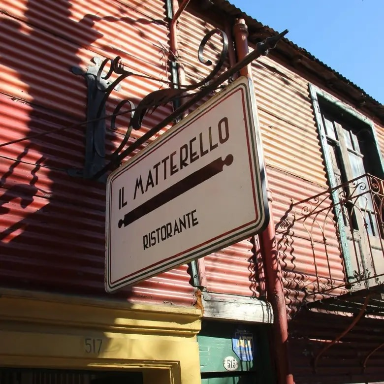

¿Pasion por la comida italiana!
Esencia Artesanal
Descubre nuestra experiencia gastronómica italiana artesanal. Sabores auténticos y pasión en cada plato, en un ambiente acogedor.

Sabor Tradicional
Sabores tradicionales que cuentan historias, ingredientes cuidadosamente seleccionados. Sumérgete en la auténtica cocina italiana artesanal que deleita tus sentidos.
Ingredientes frescos
Disfruta de la frescura y calidad de ingredientes en cada creación culinaria de nuestro restaurante.